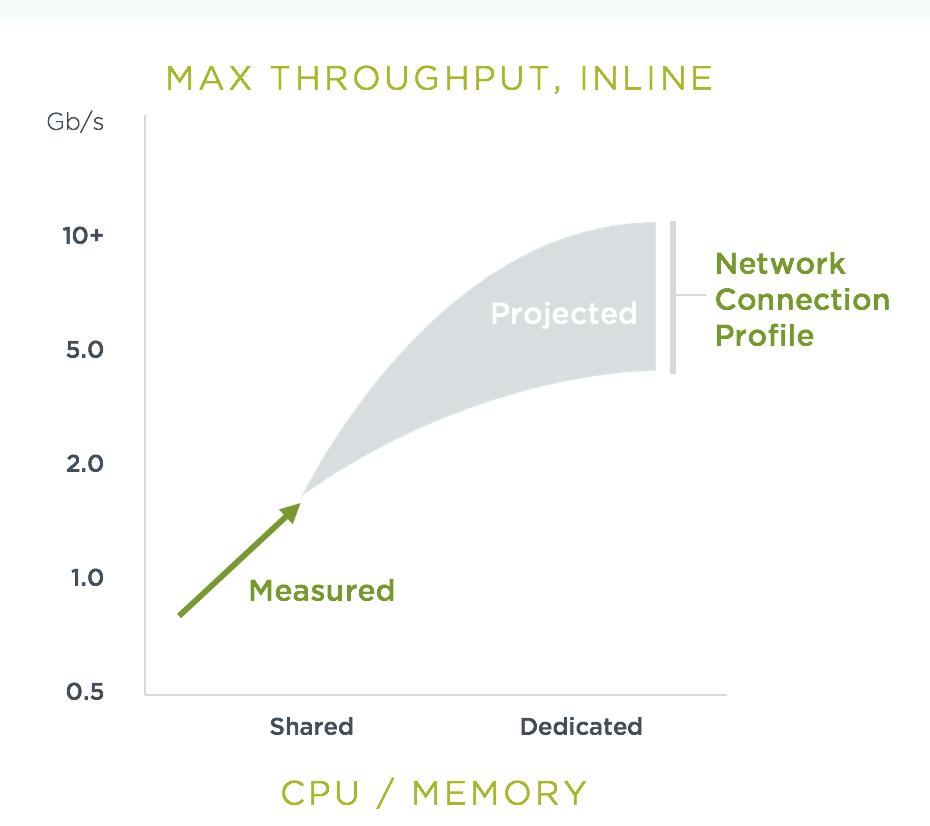

Requisitos del sistema
Requisitos del sistema
| Componente | Número de instancias | vCPU recomendada | Memoria mínima | Notas |
|---|---|---|---|---|
Controlador |
mín. 1 |
1 |
1GB |
El kernel de vCPU puede ser compartido |
Enforcer |
1 por nodo/VM |
1+ |
1GB |
Uno o más vCPU dedicados para un mayor rendimiento de red en modo Protect |
Escáner |
mín. 1 |
1 |
1GB |
El kernel de CPU puede ser compartido para cargas de trabajo estándar. |
Manager |
min 1 |
1 |
1GB |
vCPU puede ser compartido |
-
Para la copia de seguridad de configuración/HA, un PVC RWX de 1Gi o más. Consulta la sección Copias de seguridad y datos persistentes para más detalles.
-
Navegador recomendado: Chrome para un mejor rendimiento
Plataformas compatibles
-
Distribuciones de Linux oficialmente soportadas: SUSE Linux, Ubuntu, CentOS/Red Hat (RHEL), Debian, CoreOS, AWS Bottlerocket y Photon.
-
Arquitecturas AMD64 y de la familia ARM
-
CoreOS es compatible (noviembre de 2023) para el escaneo de CVE a través de la tabla de mapeo RHEL proporcionada por RedHat. Una vez que RedHat publique un feed oficial para CoreOS, será compatible.
-
Sistemas de gestión de contenedores compatibles con Kubernetes y Docker oficialmente soportados. Las siguientes plataformas se prueban con cada lanzamiento de SUSE® Security: Kubernetes 1.19-1.32, SUSE Rancher (RKE, RKE2, K3s, etc.), RedHat OpenShift 4.6-4.16 (3.x a 4.12 soportados antes de SUSE® Security 5.2.x), Google GKE, Amazon EKS, Microsoft Azure AKS, IBM IKS, docker nativo, docker swarm. Las siguientes plataformas compatibles con Kubernetes y Docker están soportadas y han sido verificadas para funcionar con SUSE® Security: VMware Photon y Tanzu, SUSE CaaS, Oracle OKE, Mirantis Kubernetes Engine, Nutanix Kubernetes Engine, docker UCP/DataCenter, docker Cloud.
-
Versión de tiempo de ejecución de Docker: 1.9.0 y superior; versión de API de Docker: 1.21, CE y EE.
-
Contenedores de tiempo de ejecución Containerd y CRI-O (requiere cambios en las rutas de volumen en los archivos yamls de ejemplo). Consulta los cambios requeridos para Containerd en la sección de despliegue de Kubernetes y CRI-O en la sección de despliegue de OpenShift.
-
SUSE® Security es compatible con la mayoría de los CNI comercialmente soportados. Los que están oficialmente probados y soportados son openshift ovs (subred/multitenencia), calico, flannel, cilium, antrea y nubes públicas (gke, aks, iks, eks). El soporte para Multus se añadió en v5.4.0.
-
Consola: Se recomienda el navegador Chrome o Firefox. IE 11 no es compatible debido a problemas de rendimiento.
-
Minikube es compatible para una evaluación inicial simple, pero no para una prueba de concepto completa. Vea a continuación los cambios requeridos para que el yaml Allinone funcione en Minikube.
Nota de AWS Bottlerocket: Debe cambiar la ruta del socket de containerd específico para Bottleneck. Consulte la sección de despliegue de Kubernetes para más detalles.
No compatible
-
GKE Autopilot.
-
AWS ECS ya no es compatible. (NOTA: No se ha eliminado ninguna funcionalidad de forma activa para operar SUSE® Security en despliegues de ECS. Sin embargo, las pruebas en ECS ya no están siendo realizadas por SUSE. Si bien proteger las cargas de trabajo de ECS con SUSE® Security probablemente funcionará como se espera, no se investigarán los problemas.)
-
Docker en Mac
-
Docker en Windows
-
Rkt (container linux) de CoreOS
-
AppArmor en entornos K3S / SLES. Ciertas configuraciones pueden entrar en conflicto con SUSE® Security y causar errores de escáner; AppArmor debe ser desactivado al implementar SUSE® Security.
-
IPv6 no es compatible
-
VMWare Integrated Containers (VIC) excepto en modo anidado
-
CloudFoundry
-
Consola: IE 11 no es compatible debido a problemas de rendimiento.
-
Host de contenedor anidado en herramientas de contenedor utilizadas para pruebas simples. Por ejemplo, el despliegue de un clúster de Kubernetes utilizando 'kind' https://kind.sigs.k8s.io/docs/user/configuration/.
|
PKS ha sido probado en el campo y requiere habilitar contenedores privilegiados en el plan/azulejo, y cambiar el hostPath en yaml de la siguiente manera para Allinone, Controlador, Enforcer: |
|
SUSE® Security admite la ejecución en VMs basadas en Linux en Mac/Windows utilizando Vagrant, VirtualBox, VMware u otros entornos virtualizados. |
Minikube
Por favor, realice los siguientes cambios en el yaml de despliegue de Allinone.
apiVersion: apps/v1 <<-- required for k8s 1.19
kind: DaemonSet
metadata:
name: neuvector-allinone-pod
namespace: neuvector
spec:
selector: <-- Added
matchLabels: <-- Added
app: neuvector-allinone-pod <-- Added
minReadySeconds: 60
...
nodeSelector: <-- DELETE THIS LINE
nvallinone: "true" <-- DELETE THIS LINE
apiVersion: apps/v1 <<-- required for k8s 1.19
kind: DaemonSet
metadata:
name: neuvector-enforcer-pod
namespace: neuvector
spec:
selector: <-- Added
matchLabels: <-- Added
app: neuvector-enforcer-pod <-- AddedRendimiento y escalado
Como siempre, la planificación del rendimiento para los contenedores de SUSE® Security dependerá de varios factores, incluyendo:
-
(Controlador y Escáner) Número y tamaño de las imágenes en el registro que deben ser escaneadas (por el Escáner) inicialmente
-
(Enforcer) Modo de servicios (Descubrir, Monitorizar, Proteger), donde el modo Proteger funciona como un cortafuegos en línea
-
(Enforcer) Tipo de conexiones de red para cargas de trabajo en modo Proteger
En modo Monitorizar (filtrado de red similar a un espejo/tap), no hay impacto en el rendimiento y el Enforcer maneja el tráfico a velocidad de línea, generando alertas según sea necesario. En modo Proteger (cortafuegos en línea), el Enforcer requiere CPU y memoria para filtrar conexiones con inspección profunda de paquetes y retenerlas para determinar si deben ser bloqueadas/descartadas. Generalmente, con 1GB de memoria y una CPU compartida, el Enforcer debería ser capaz de manejar la mayoría de los entornos mientras está en modo Proteger.
Para entornos sensibles al rendimiento o la latencia, se puede asignar memoria adicional y/o un kernel dedicado de CPU al contenedor Enforcer de SUSE® Security.
Para la optimización del rendimiento del Controlador y el Escáner para el escaneo del registro, consulte los Requisitos del Sistema anteriores.
Para consejos adicionales sobre rendimiento y dimensionamiento, consulte la sección Onboarding/Mejores Prácticas.
Rendimiento
Como muestra el gráfico a continuación, las pruebas de referencia de rendimiento básico mostraron un rendimiento máximo de 1,3 Gbps POR NODO en una pequeña instancia de nube pública con 4 kernels de CPU. Por ejemplo, un clúster de 10 nodos podría manejar un máximo de 13 Gbps de rendimiento para todo el clúster para servicios en modo Protect.

Este rendimiento se proyectaría a escalar a medida que se asigne una CPU dedicada al Enforcer, o cambie la velocidad de la CPU, y/o se asigne memoria adicional. Nuevamente, la escalabilidad dependerá del tipo de tráfico de red/aplicación de las cargas de trabajo.
Latencia
La latencia es otra métrica de rendimiento que depende del tipo de conexiones de red. Al igual que el rendimiento, la latencia no se ve afectada en modo Monitorizar, solo para servicios en modo Proteger (cortafuegos en línea). Los paquetes pequeños o los servicios simples/rápidos generarán una latencia más alta en un SUSE® Security como porcentaje, mientras que los paquetes más grandes o los servicios que requieren un procesamiento complejo mostrarán un porcentaje menor de latencia adicional por el SUSE® Security enforcer.
La tabla a continuación muestra la latencia promedio del 2-10% medida utilizando la herramienta de referencia de Redis. El Benchmark de Redis utiliza paquetes bastante pequeños, por lo que se espera que la latencia con paquetes más grandes sea menor.
| Probar | Supervisar | Proteger | Latencia |
|---|---|---|---|
PING_INLINE |
34,904 |
31,603 |
9.46% |
SET |
38,618 |
36,157 |
6.37% |
GET |
36,055 |
35,184 |
2,42% |
LPUSH |
39.853 |
35.994 |
9,68% |
RPUSH |
37.685 |
36.010 |
4,45% |
LPUSH (Benchmark LRANGE) |
37.399 |
35.220 |
5,83% |
LRANGE_100 |
25.539 |
23.906 |
6,39% |
LRANGE_300 |
13.082 |
12.277 |
6,15% |
El punto de referencia anterior muestra el TPS medio en modo Proteger en comparación con el modo Monitorizar, y la latencia añadida en modo Proteger en varias pruebas del punto de referencia. La principal forma de reducir la latencia real (microsegundos) en el modo Proteger es ejecutar en un sistema con una CPU más rápida. Puedes encontrar más detalles sobre esta herramienta de punto de referencia de Redis de código abierto en https://redis.io/topics/benchmarks..
Añadiendo restricciones de escalado para entornos de carga de trabajo grandes.
Durante la instalación de NeuVector, si tu sistema operativo anfitrión tiene una gran cantidad de cargas de trabajo, entonces los pods de NeuVector Enforcer pueden fallar al iniciarse al intentar abrir el gran volumen de archivos debido a la monitorización del anfitrión de los pods. Esto también puede causar fallos en el servidor RKE2 debido a la gran cantidad de archivos abiertos.
Como solución alternativa para entornos de carga de trabajo grandes, necesitas crear un archivo como example-fs-max.conf en la ubicación /etc/sysctl.d/ y añadir restricciones de escalado con la siguiente configuración:
fs.inotify.max_user_instances=8192
fs.inotify.max_user_watches=524288
fs.filemax=5000Luego asegúrate de que la configuración se aplique con un reinicio mediante el siguiente comando:
systemctl restart systemd-sysctl